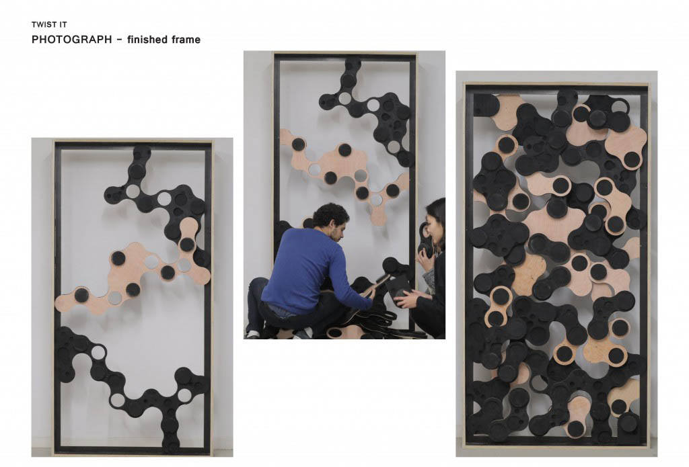
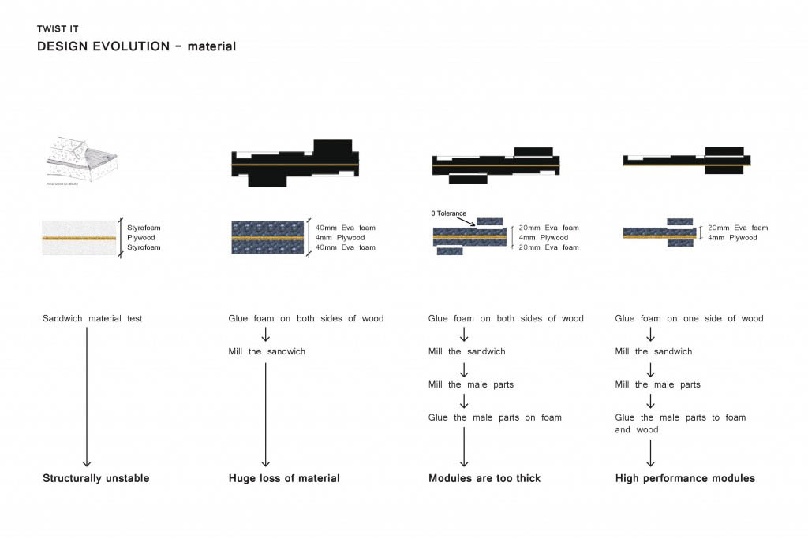
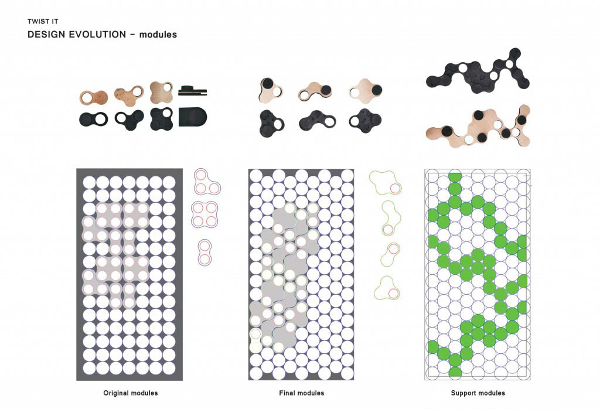
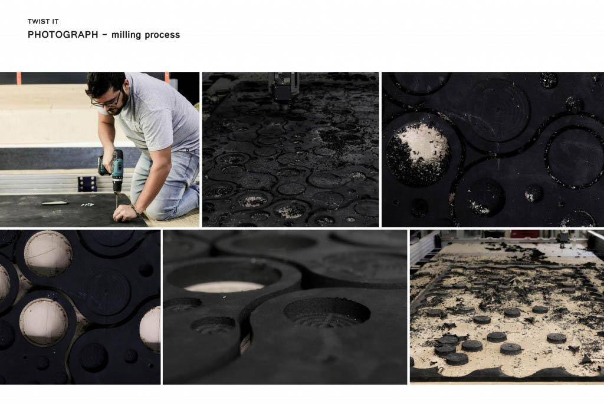
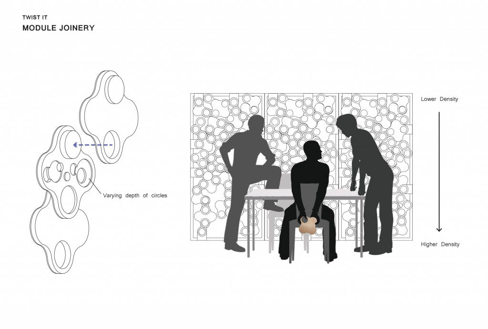

Twist It is an acoustically performative panel that act as a sound absorber for the new studio space of IaaC which is now characterized by hard, reflective surfaces.
We went through several design iterations of the module. First, we glued two pieces of styrofoam to a piece of plywood to create a sandwich material, but it was structurally unstable for the 2 meter tall panel. Then, we tested with a sandwich of eva foam and plywood which performed well. In order to create interlocking modules, we wasted a lot of materials to create the “male” parts that connects to one another. Therefore, we decided to mill the male parts separately, and glue them on the module.
We created varying shapes of modules, from one to four circles. To minimize waste, we shifted the original geometry so we can make the most use of the material. Also, we designed three special modules that spans the panel for extra support.
The layering of the modules define the density of the panel. Density is higher at the bottom where people talk, and becomes less dense at the top. This initial configuration can be changed by the users adapting to the future needs. It is one of the key points of the modular design. We used conventional milling for all the parts in order to have a smooth finish. Maximizing the nesting between the parts to avoid the excess of leftover material.
A few projects that interest us are Matte Chrome (Box Clever), Hive Panels (Modular Arts), and Modular Screen (Moorhead&Moorhead). We focused on modular design, and an interlocking system for our sound-proof panel.
Project developped withEduardo Chamorro, Francois Nour, Yifan Liao, Tawnza El Moujahid